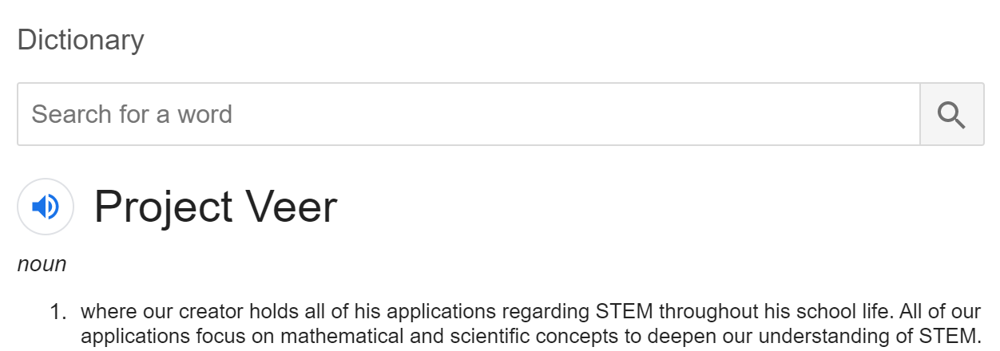

Examples include:

The Veer Sandhu is a Canadian human being attending highschool through the International Baccalaureate program. This somewhat tall human is versatile in STEM subjects and is close enough to a guitarist. He created this application using the Angular Framework and Material Design.